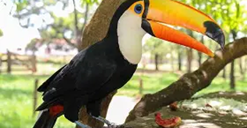

FLORESTA TROPICAL

Vegetação
Densidade e diversidade: Apresentam vegetação densa, com árvores de grande porte, arbustos e uma variedade de plantas epífitas, como orquídeas e bromélias. Solo: Apesar da alta produtividade, o solo é geralmente pobre em nutrientes; a fertilidade é mantida pela rápida decomposição da matéria orgânica.


Fauna
A fauna da floresta tropical é extremamente diversa, com uma vasta gama de mamíferos, aves, répteis, anfíbios e insetos. Muitos animais são adaptados à vida nas árvores, como macacos e preguiças.

Clima
O clima é quente e úmido durante todo o ano, com altas temperaturas e chuvas abundantes. A umidade elevada é uma característica constante, favorecendo a vegetação exuberante.


Importância Ecológica
As florestas tropicais são os biomas mais biodiversos do planeta, abrigando milhões de espécies. Elas desempenham um papel crucial na regulação do clima global, absorvendo grandes quantidades de dióxido de carbono.